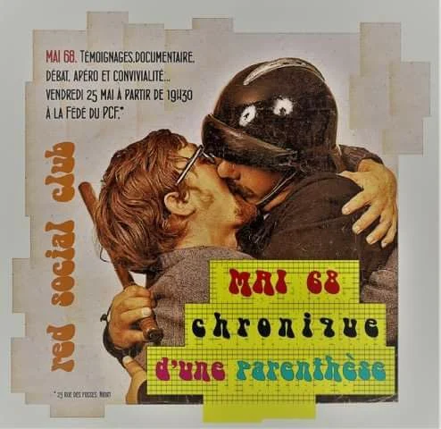

Annonce archivée
Red Social Club. Débattre de Mai 68 à table
Date indiquée par Facebook · 20 mai 2018
Repères éditoriaux
Au Red Social Club, nous avons proposé de débattre de Mai 68. Chacune et chacun pouvait apporter de quoi composer le repas partagé.
Texte conservé avec la publication
Prochain Red Social Club sur mai 68! Chacun apporte son repas à partager! Le Red Social Club c'est débat et convivialité!

Sources
Archive rouge · export Facebook · AR-0002-FB-02103
À lire aussi · Bonne année 2026 de la part du PCF des Deux-Sèvres